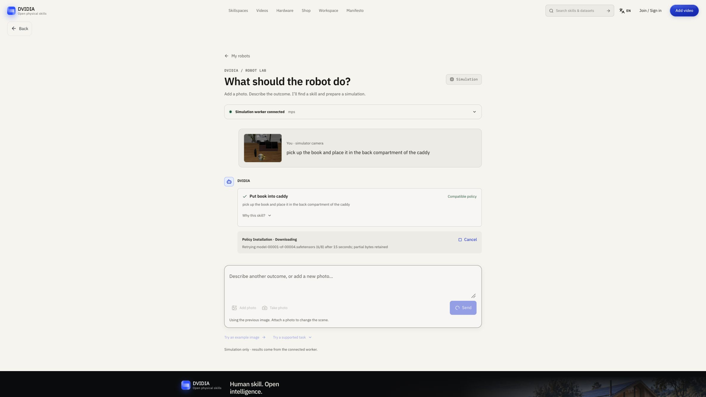
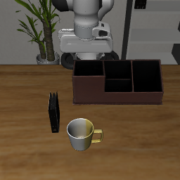

Product architecture and local runtime verification
From a conversation to compatible robot skills
Photo inference and one native reset verified · OpenVLA actions and steering not run
Abstract
A conversation can carry a photo and desired outcome through scene review, skill retrieval, compatible installation, simulation and inspectable action traces. The local prototype uses ten LIBERO-10 task manifests sharing a pinned OpenVLA checkpoint. Real SSDlite inference and a repeatable native task-5 reset are recorded; the checkpoint transfer stopped after an 8 MiB partial file, so learned policy actions and activation-steered behavior remain unrun. The note separates observed evidence, candidate relevance, executable compatibility and measured completion, and defines staged evaluation for the chat workflow and raw MLP channel interventions. General household planning and hardware execution remain unqualified.
In this paper
DVIDIA research · 27 October 2026 · Product architecture and local runtime note
Original writing: CC BY 4.0. Referenced models, code and assets retain their own terms.
The intended interface is a conversation: attach a photo, describe a desired outcome, and let DVIDIA find an executable skill for the available robot. The conversation should carry the workflow from observation through installation, simulation and review. A user should not need to assemble those tools manually.
The current prototype connects photo analysis and conservative skill retrieval to a separate local worker for ten LIBERO-10 task descriptions sharing one revision-pinned OpenVLA checkpoint. Real local object detection and one native simulator reset are verified. OpenVLA model inference, learned robot actions and activation-steered robot actions have not been executed. The checkpoint transfer stopped after an 8 MiB partial download; this is not an installation or a successful task. The runtime receipt and evidence notes preserve that boundary. A companion Hugging Face concept card tracks the same documentation scope; it does not host OpenVLA inference.
Implementation follow-up — 28 October 2026
The local prototype now implements the photo/outcome composer and conversation cards. A unique compatible unblocked task starts verified installation and real scene preparation; the user sees the simulator camera before choosing Run in simulation. Connection settings, object corrections and action/neuron inspection are expandable. This is a typed tool workflow with conservative lexical retrieval; the conversation does not add a general language planner.
Nineteen focused chat/client/planner tests and 42 worker tests pass. New regressions reject reversed spatial destinations and wrong target colors. Installation cancellation races and explicit stop-tracking recovery are handled. Browser control initially timed out, then recovered in a fresh tab. Development and built desktop previews verified real photo detection, an unsupported dishwashing reply, actual task-5 camera capture, unique compatible retrieval and live installation progress. Browser error logs were empty. Phone-sized layout acceptance remains pending. The repaired downloader has resumed the real checkpoint transfer, but no completed installation, learned action or steering result is established. The 26 October receipt below remains unchanged.

The screenshot shows installation progress, not robot execution.
One conversation carries the task
A useful request is “Put the book in the back compartment of the caddy,” with a photo attached. DVIDIA needs to identify the intended object and destination, look for a compatible behavior, check its prerequisites and expose any missing evidence. The product should present these as progress in one conversation:
| Conversation event | What it represents |
|---|---|
| Photo and desired outcome | User input, including explicit corrections |
| “I found a book; please identify its destination” | A grounded question when the evidence is insufficient |
| Skill card with prerequisites and compatibility | A candidate, with reasons it can or cannot run |
| Download progress and verified installation | Actual artifact state, including interruption and retry |
| Simulator preview and run progress | A real task reset followed by actual policy actions when available |
| Outcome and inspectable trace | Success, failure or cancellation with actions and observations |
| “Try this intervention” | An experimental rerun with the same initial simulator state |
This is the conversational simplification implemented in the local prototype. Detailed connection settings, manifests, action vectors and channel controls can live in expandable cards. The conversation remains an interface to typed tools; assistant prose cannot mark an artifact installed or a task completed.
“Tidy this room” expresses a valid desired outcome but leaves important decisions unresolved: where toys belong, which clothes are dirty, whether a container is reachable and whether the robot has the required behaviors. A photo does not answer all of these questions. The first version should ask for missing destinations or state evidence and report unsupported tasks. General household task decomposition and automatic selection of multi-skill sequences are future work. No dishwashing, laundry or toy-sorting competence is established by this prototype.
Retrieve by intended change, then check compatibility
The architecture connects five distinct decisions:
Photo + desired outcome
-> observations with source and uncertainty
-> candidate skills with prerequisites and effects
-> compatible artifact + verified installation
-> actual simulator state + policy execution
-> measured outcome + inspectable trace
An object name is a useful search clue, but the intended change determines whether a skill is relevant. A mug-placement task does not satisfy a request to wash a mug. A drawer task that closes the drawer adds an unwanted effect if the user asked for it to remain open. The current browser planner uses bounded lexical matching and aliases; it checks object identities, destinations, relations, state changes and negation, then rejects incompatible profiles. It is not a learned affordance estimator or a general language planner.
This separation is motivated by SayCan, which combines language-based skill relevance with state-dependent affordances. Our current rule-based filter does not reproduce SayCan's learned value functions or its reported performance. The design implication is to keep goal relevance, observed prerequisites and runtime compatibility independently inspectable.
Every executable candidate currently carries a skill ID, instruction, required
objects, effects, prerequisites, profile ID, checkpoint repository, immutable
revision and benchmark task ID. The present profile is
libero-panda-openvla-v1: a Franka Panda simulation using seven-dimensional OSC
pose actions. Its checkpoint is
openvla/openvla-7b-finetuned-libero-10.
The ten task entries share the same checkpoint; downloading each task does not
create ten separate learned policies.
The example v1 manifest is documentation only and contains no installed artifact.
A broader skill registry will also need versioned observation and action schemas, units, control rate, gripper convention, tested operating envelope, required sensors, adapter versions and task-specific evaluation receipts. Hardware compatibility would require its own tested adapter and qualification. Those extended registry fields are a proposed contract, not an implemented universal skill package.
Execution belongs to the local worker
The browser communicates with an isolated loopback worker using the typed
dvidia.robot-lab.v1 protocol and an in-memory capability. The worker performs
real detector calls, artifact verification, native resets, model loading and
bounded runs. It contains no physical robot driver. Checkpoint size, revision
and digests are verified before atomic activation; partial files never count as
an installed skill. The runtime loads explicit classes from pinned OpenVLA
source rather than executing a checkpoint's remote class mapping.
An arbitrary household photo is planning input. It is not an executable LIBERO state. Before a run, the user must select a supported benchmark task and capture its real simulator camera and initial state. Task metadata is marked as simulator evidence, distinct from image detections and user corrections. A run is bound to that task, scene, seed and installed checkpoint. Completion must come from the simulator's task-success signal.
OpenVLA supplies a language-conditioned
robot action policy. The selected checkpoint card
describes a LIBERO-10 fine-tune; it is a concrete starting point for this
benchmark-specific experiment, not a generally installable housekeeping model.
The runtime uses predict_action with the libero_10 normalization statistics.
Code, checkpoint and underlying model terms need separate review; the upstream
MIT labels do not replace the applicable Llama 2 terms or third-party asset
licenses.
What has actually run
The retained receipt was recorded on 26 October 2026 and is published here as a historical engineering result. It is not a fresh benchmark of this note's date.
| Component | Recorded evidence | Limit |
|---|---|---|
| Local runtime | Python 3.12.9, Torch 2.6.0 and MPS detected on an Apple Silicon Mac | Full OpenVLA memory fit and latency unverified |
| Real photo inference | Verified TorchVision SSDlite checkpoint; cup 0.9957, person 0.8254 and dining table 0.4730 on one editorial image | Confidence scores are detector outputs, not measured accuracy; no dirt, color, ownership or task-state judgment |
| Native task reset | LIBERO-10 task 5, seed 7, book/caddy camera image and flattened-state digest | Zero policy actions; ten no-op settling steps only |
| Reset repeatability | Worker-thread and independent main-thread reset digests match | Matching initial state does not establish deterministic inference or rollouts |
| Artifact installation | Interrupted transfer retained 8 MiB of a roughly 15.1 GB checkpoint | No activated checkpoint |
| Policy and steering | Transport and hook fixtures tested | No learned rollout, task result or behavioral steering measurement |
The reset digest is
b133849e34e709aaecf9f42e1a281d9dc53dfeeebf01d5e41077914b8d12893e.
The macOS worker uses MuJoCo's official offscreen CGL context to avoid initializing
GLFW/AppKit from an HTTP worker thread. This changes context selection, not the
physics or observed state. Only the task-5 asset closure was provisioned for the
recorded runtime check; other task assets remain locally unverified.

The photograph used for detector testing was an editorial illustration from the app, not a physical robot camera capture. The simulator image above is an actual rendered reset. Neither is evidence that a robot performed the requested action.
Neuron exploration is a separate measured intervention
Lyra's neuron explorer inspired the interaction: inspect model units, change a unit's activation and retain the resulting behavior. Its text-model experiments do not by themselves establish a robot control method. The directly relevant robotics precedent is Mechanistic Interpretability for Steering Vision Language Action Models, which studies semantic activation directions and interventions in OpenVLA and π₀. Its research code is a methodological reference; the DVIDIA worker uses an original hook and does not vendor that toolkit.
The implemented hook observes a zero-based intermediate Llama MLP channel at the
input to down_proj. It records the last token's value on each autoregressive
forward pass and can add a bounded raw dose to that channel. The displayed
per-action value averages the pre-intervention values across generation passes.
This is a raw channel intervention, not an identified “careful,” “fast” or
“move left” neuron. It is also not an implementation-equivalent reproduction of
the paper's semantic cluster interventions. Hook cleanup and cancellation have
unit coverage; their effects on a loaded robot policy remain unmeasured.
Before behavioral claims, compare an unsteered baseline and intervention on the same checkpoint, task, seed, preprocessing and exact reset digest. Record all action dimensions, end-effector motion, activation summaries, cameras, completion and failures. Current portable Pillow preprocessing is explicitly a numerical variant of upstream's TensorFlow path, so published OpenVLA benchmark scores are not a performance reference for this Mac configuration.
Staged evaluation and release gates
- Conversation and retrieval: freeze a small set of supported and unsupported requests, including ambiguous destinations, negation and desired state changes. Independently label compatible candidates. Report retrieval precision and recall, unsupported-task handling and clarification behavior. An interaction that looks correct is not evidence of execution.
- Installation and one-action diagnostic: finish the revision-pinned transfer, verify every artifact, load the full model and execute one real action on the recorded task-5 reset. Record peak memory, load/inference time, actual action vector and failure status. Stop if memory or rendering is insufficient; a substitute controller does not satisfy this gate.
- Baseline simulation: run bounded unsteered episodes on a frozen set of seeds. Retain every attempt and the actual LIBERO success signal. Report strict completion, step counts, latency and invalid attempts separately.
- Causal channel study: choose units and doses using development scenes, then freeze them. Compare paired baseline, sham-hook, positive/negative-dose and randomly selected channel controls on held-out seeds. Measure task completion alongside motion changes; do not select only successful videos.
- Skill sequencing and household transfer: introduce separately qualified skills, evidence refresh after each action, explicit recovery and destination rules. Hardware execution needs independent adapter, sensing and task qualification. This stage is not implemented or run.
Stages 2–5 remain unrun. The first deliverable is an honest conversation that connects to real tools and makes missing capability understandable. The research question is whether that interface can select a skill whose measured behavior achieves the user's intended change, and whether controlled interventions alter that behavior reproducibly without degrading completion.